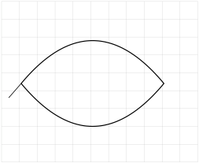
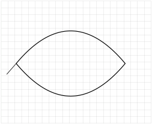
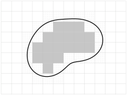
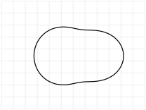
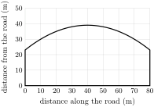
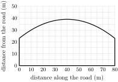
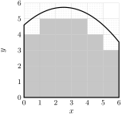
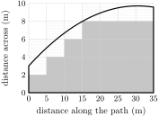
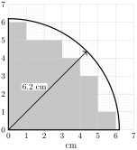
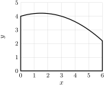

Curriculum Alignment
- Strand
-
2.0 Measurements and Geometry
- Sub-Strand
-
2.1 Area Approximations
- Specific Learning Outcomes
-
Use counting squares technique to estimate area of irregular shapes and curves



37.6. Give exact answers unless the question asks you to round.






37.6. Give exact answers unless the question asks you to round.

![Runestone Academy logo]()
![MathJax logo]()